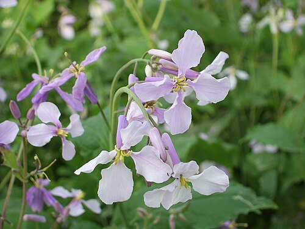
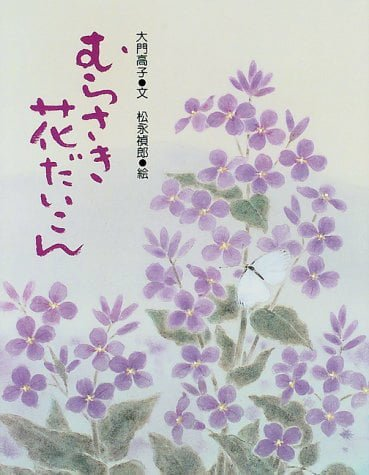
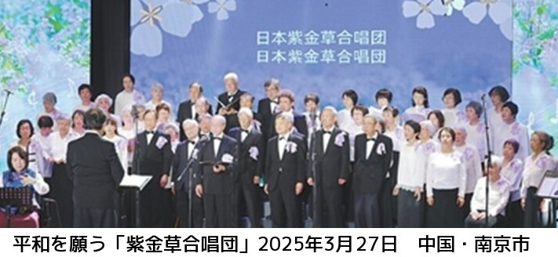
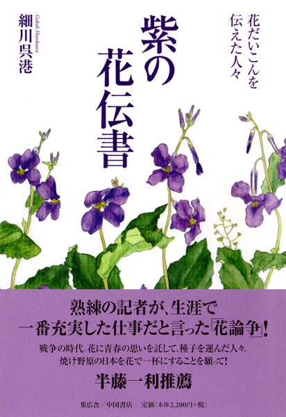

先日、長野県上田の戦没画学生の絵を展示してある『無言館』に行って来ました。 外では出征兵士を送る声が聞こえる中で、若者は「あと五分、あと十分」と恋人の絵を描き続け、「帰って来てからまた描くから」と言って絵筆をおいたそうです。
多くの若者達の手紙や日記にも、どんなに無念な思いだったことかと、胸が詰まりました。
また、兵士の亡くなった所が、『中国』という場所が多いのには、違った意味で複雑な思いに駆られました。 無念の思いで戦地に向かった若者達が、あの時代どのような教育と試練を受けて、日本鬼子になっていったのでしょう。
最近、南京虐殺記念館と北京の抗日戦争記念館を見る機会がありました。 身の毛もよだつとは、このことをいうのでしょうか。
人間がこのような鬼になれるということの恐ろしさは、たとえようもありません。
我が子を戦場にとられたくない。
教え子を再び戦場に送りたくない。
人間を鬼にしたくない。
そう思うこの頃です。
戦争の悲しさは被害はもちろんですが、加害侵略者になることの恐ろしさ悲しさだと思うのです。
ところで、春土手や道端でよく見られ『花だいこん』とか『諸葛菜』とも呼ばれている、薄紫の美しい菜の花をご存じでしょうか。 心に染みる優しい野の花です。
この花が、日中戦争当時、中国南京郊外の紫金山から持ち帰って、鎮魂と平和への祈りをこめて蒔き広められた花だと知ったのは、二十数年前のことでした。
その話に心ひかれ、最近、絵本『むらさき花だいこん』(絵 松永複朗 新日本出版社)と合唱朗読構成『紫金草物語』(作曲 大西進)という作品を創りました。
これは、絵本と歌の一節です。
私は、これまでも子どもの命の問題や、薬害エイズ、酸性雨の立ち枯れの山のことなど合唱曲を創作してみんなで歌って来ました。
合唱は、思いを一つに誰でも参加出来る、素敵な表現活動です。 ご一緒に歌いませんか。
多くを語っていない(語れない)お年よりたち、母親、教師たちが若者や子どもたちに、加害や戦争について語りながら一緒に読んでもらう絵本にしたいと思いました。
今、絵本は小中高大学の授業での読み聞かせや、教会やお寺での朗読会、老人ホームでの紙芝居等という形で、広がってきています。
先日は中学校で授業をさせて頂きました。 北京の国際放送でも朗読してくれました。
以前「紫金草物語」を劇団が上演したとき若者が「僕は日本がアメリカと戦争をしたことは知っていたけれどと、中国と戦争をしたことは全く知りませんでした。勉強になりました。」と、いいました。 学校でそれなりに勉強して来ているはずですが、心にインプットされていないのだなぁと思いました。
「南京虐殺はでっちあげだ」とか「なかったことだ」という政治家やマンガ家もいる日本。
「戦争は最大の美学である」というようなマンガを読んでどう思うのか恐ろしくなります。 平和教育に取り組んでいる正則高校の皆さんはどんな風に戦争を受け止めているのでしょうか。 是非問いてみたいものです。
『紫金草物語』の演奏に一緒に取り組んだ二胡の演奏家 張勇さんの、「是非南京の人達に聴かせてほしい」という発言から、南京で『紫金草物語』の演奏会を開くことになりました。
来年(二〇〇一年)三月の演奏会に向けて、今全国で三百人ほどの人達が練習に参加してきています。
中国の政府もコンサートをやるなら全面的に協力したいと言ってくれました。 さらに絵本は南京虐殺記念館の『日本の国民が平和を呼びかけているコーナー』に見開きで展示してくださるそうです。
日本人としての良心で、何とか成功させたいと思っています。
今日本は、きちんと歴史を見つめ同じ過ち(それ以上に恐ろしい過ち)を繰り返すことのないように二十一世紀は戦争のない世紀に。
紫金草オオアラセイトウ＝諸葛菜（ショカツサイ）＝紫花菜（ムラサキハナナ）＝花大根（ハナダイコン）
中国原産のアブラナ科の越年草で、諸葛孔明が陣を張ったときに真っ先にこの花の種を播いたという伝説から「諸葛菜」とも呼ばれる。
日本には観賞用および油を採取するため、19世紀末には導入され野性化した。
戦中から戦後にかけて星薬学専門学校の初代校長(当時、陸軍薬剤科少将) 山口誠太郎が紫金草（シキンソウ）と称して種子を広める活動をした。
薄紫色の花が美しいため、庭などで栽培されることも多いが、道端や空き地でも普通によく育つ。 若い葉や花芽などは食べられる。引用: wikipedia
むらさき花だいこん
大門高子=文
松永禎郎=絵
戦争を知る絵本
（読者対象：
小学校低学年／
小学校中学年）あなたは紫の菜の花をみたことがありますか。
この花は中国からやってきました。
今から五十年以上前、日本は中国に戦争をしかけました。
中国でこの花と出会った一人の兵士が花の種を持ち帰り、平和への願いをこめてまき、ひろめたのです。
花も平和も人の手で、人の心で、守り育てられるもの。――引用: 新日本出版社
紫金草合唱団
紫金草合唱団は、日本各地で数百回、海外でも計13回公演を行い、歌声で南京大虐殺の犯罪行為を告発し、平和の維持を訴えている。
団員はほとんどが高齢者だが、歌の中の紫金草のような輝きを放ち、 病気を患っていたり、車椅子の身であったりしても、歌声で正義の声を上げ続けている。一つの組曲が真実の歴史の記憶を伝える
「花は見ていた戦争の悲しさ 風と歌う レクイエム……」
組曲「紫金草物語」は、中国侵略日本兵が雨の紫金山で南京の少女と出会う物語を描いている。
日本では『日本が被害を受けた』ことだけ教え、日本人が犯した加害のことはほとんど教えられていなかった。
『紫金草物語』は加害について教えるには本当にいい話でもある。引用: 人民網日本語版 2025年8月15日
平和を願う「紫金草」の歌声を聞いてください
紫の花伝書─花だいこんを伝えた人々
細川呉港・著
発行／集広舎 発売／中国書店
（ISBN 978-4-904213-13-1 Ｃ0095）戦争の時代。花に青春の思いを、託して種子を運んだ人々。
焼け野原の日本を花で一杯にすることを願って!
戦後、日本中に広まった花だいこんの来た道を追って。
初めて明らかにされる中国大陸からの五つのルートと五つの人生。
揚子江沿岸、上海、北京、そして満洲から。
彼らが生きた時代は、まさに戦争の時代だった。引用: amazon.co.jp
紫の花伝書─花だいこんを伝えた人々
{kind=link}